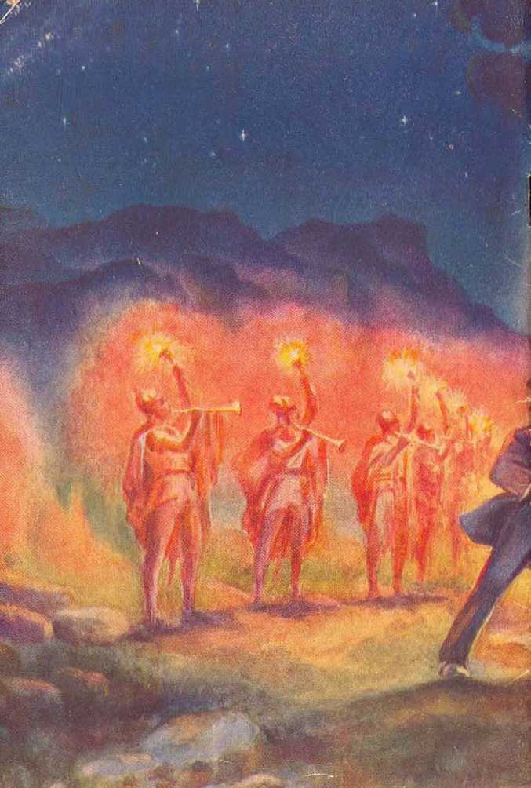

A Bible Treatise
by
J. F, RUTHERFORD
Page
3 Universal War Near
40 Typical War
53 Satan’s Army
"Universal War Near,” contained herein, is the text of a speech delivered from the platform of Shrine Auditorium, Los Angeles, Calif., January 13, 1935, and broadcast over an independent network of 103 radio stations, including four short-wave stations, winch transmitted this epochal message to the very ends of the earth.
Now, in print and by translations in sixty languages, this message is being delivered to “many peoples, and nations, and tongues, and kings”. -—Revelation 10:11; 14:6.
Copyrighted 1935 axd Published by
WATCH TOWER BIBLE AND TRACT SOCIETY International Bible Students Association. Brooklyn, N. Y., U. S. A. Hade in the United States of America
Branch Offices :
London, Magdeburg, Paris, Toronto, Strathfield, Capo Town, Berne, Copenhagen, Stockholm, and other cities.
UNIVERSAL
GREAT EVENTS have heretofore come to pass and which involved many nations. In the very near future a far greater event will come to pass and which will involve the entire universe. The war of 1914 was the greatest war up to that time. The universal war that is near will be far more stupendous, and only a few persons, comparatively, will survive. Those who do survive will be the ones who receive a knowledge of and who obey the truth. On this occasion attention is directed to the coming universal war in order that the people of good will may have opportunity to be informed and to take the steps necessary for their own protection.
The conclusions here announced are not based upon the opinion of man, but are fully supported by the inspired prophecy recorded in the Bible. The greatest storehouse of information is the Bible, and without doubt there is greater ignorance amongst the people concerning the Bible than of any book ever written. Because we now stand at the very portals of universal war the information concerning the same, as set forth in the Bible, is of greatest interest, convenience 3 and necessity to the people. Never in the history of the world has there been such a concerted effort made to prevent the freedom of speech as now, and the reason is directly connected with the universal war soon to be fought.
That all the nations are now feverishly arming for war, no one will attempt to deny. If you ask the rulers of the nations why this great war preparation, not one will be able to give a satisfactory answer. All nations openly declare that they do not desire war, and yet they go madly on building all manner of machines for the destruction of men and property.
WHY NATIONS ARMING
What is the real reason why the nations are hurrying to war? The correct answer is, because there is an unseen power that is drawing all the nations into an armed camp. Let all persons of good will now lay aside religious, political or other prejudice and calmly consider this matter. The great Jehovah God has put the truth in the Bible for the benefit of man, and through his prophet Isaiah (1:18) he says to men: “Come now, and let us reason together.” Let that admonition be obeyed upon this occasion, and those who do calmly reason will profit thereby.
It is expressly stated in the Bible that it was written for the instruction of man at the time of the end of the world, where we now are. Furthermore it is stated in Revelation that God has given Jesus Christ a revelation of the tilings that must speedily come to pass following 1914 and that Christ in turn informs men of what is coming to pass, if such persons diligently seek to understand the truth.
At chapter sixteen of Revelation these words are recorded, to wit: 'And I saw three unclean spirits like frogs come out of the mouth of the dragon, and out of the mouth of the beast, and out of the mouth of the false prophet. For they are the spirits of demons, working miracles, which go forth unto the kings of the whole world, to gather them together unto the war of that great day of God Almighty. . . . And they gathered them together into a place called in the Hebrew tongue Armageddon/ (Revelation 16: 13, 14, 16, R.F.) These words constitute a part of the revelation of things that must speedily come to pass after 1914. The word "dragon” there used is one of the names that God gave to the Devil; and the words "beast” and "false prophet” therein used are names given to the instruments which the Devil uses to accomplish his wicked purpose.
"Beast” is the symbolic name used in the Scriptures to describe the visible or earthly part of Satan’s organization that rules the nations of the earth and is made up of three elements, to wit, religion, commerce, and polities. “False prophet,” used in this text, symbolically means that part of Satan’s visible organization which is his chief spokesman or mouthpiece on the earth. The “false prophet” is composed of the leading nations of “Christendom” speaking for the nations of the world and using the League of Nations as a dummy, like a ventriloquist who appears to speak by a dummy. It is really the wicked Devil speaking through the “false prophet” and using the League of Nations dummy to deceive mankind. Here is the plain statement from God’s Word that the Devil is using invisible wicked spirits and his visible representatives on the earth for the purpose of gathering or drawing all the nations of the world to the great and universal war, which is called in the Scriptures “the war of the great day of God, the Almighty”.
WHY?
By what authority can it be said that the gathering of the nations is now taking place and that the universal war is near ? The prophecies in the Bible, which are true, give the complete answer to that question. That answer in brief is this: Before the tragedy in Eden all creation honored the name of Jehovah God. Lucifer was, by God’s appointment, the overlord of the earth, and a part of Jehovah’s organization. Lucifer rebelled against God and boasted that he could cause all men to curse and defame the name of Jehovah God and turn them away completely from God. For this wicked rebellion God entered his judgment of death against Lucifer and at the same time changed his name to that of Dragon, Serpent, Satan, and Devil. (Ezekiel 28:13-17; Revelation 20:1-3) God did not execute his judgment against the Devil at the time entered, but, as recorded at Exodus 9:16, Jehovah told Satan that He would permit him to remain and attempt to carry out his boastful challenge before Satan is destroyed and that God would do so that in due time he, Jehovah, might exhibit his own supreme power and cause his own great name to be declared by his witnesses throughout the world. Jehovah God set a specific time during which Satan has been permitted to do all within his power to prove his wicked challenge, and God has declared that at the end of such time He will destroy Satan and his wicked organization. That period of time for the operation of Satan is designated in the Scriptures as a 'time of waiting’, the end of which period of waiting marks the end of Satan’s world. (Psalm 110:1; Zephaniah 3:8; Matthew 24:3) When that period is reached, then the prophecy of Revelation begins to be fulfilled, and which things must speedily come to pass.—Revelation 1:1.
During that period of waiting the question in dispute has been, Who is supreme and who shall rule the world? and will the Devil be able to turn all men away from God, or will some of them maintain their integrity toward God? During the waiting period God has not attempted to prevent the Devil from exercising his power over men and nations, but God has kept the truth before mankind so that those who desire might learn and obey the truth and prove faithful to God under the test and thereby maintain their integrity toward the Most High. The end of that period of waiting must eoine sometime, and when reached it marks the beginning of the preparation for the execution of Satan and his wicked forces in the great universal war.
That long period of waiting came to an end in 1914, the proof of which is abundantly given by prophecy and the physical facts in fulfillment thereof. The prophecy of Christ Jesus, the great Prophet, definitely fixes the date of the end of that period of waiting. The first evidence of the end of that period of waiting was the World War, beginning in August 1914. According to Revelation, chapters. 11 and 12, there was, about that time, a war also in heaven, resulting in Satan and his wicked angels’ being cast out of heaven and down to the earth, and since then the Devil has confined his work to the nations of the earth. Since 1914 great woes have come upon the world; as it is written, in Revelation 12:12: 'Woe to the inhabiters of the earth, and of the sea! for the devil is come down unto you, having great wrath, because he knoweth that he hath but a short time.” As there stated, the Devil sees that his time is short in which he must prepare for the great and final battle, and his purpose is to destroy all men rather than to see any man serve Jehovah God. Tn no other way could Satan win the great issue between himself and Almighty God. And Satan is certain to fail 1
It was in 1918 that the Lord began to gather his faithful ones unto himself and to cause them to declare that the kingdom of God under Christ is here and is the hope of the world. From that time forward the Devil hastens to draw the nations into the war camp. It was about the same time that the League of Nations was formed, which is the Devil’s substitute for God’s kingdom, and which League is employed to deceive the nations and to blind the people to the truth that God’s kingdom is the only hope of mankind. Now the Devil uses his invisible forces, composed of wicked spirits, and his visible forces, composed of the '‘beast” and the "false prophet”, to deceive the people and to gather the nations of the whole world together for the universal war.
Do the rulers of the nations of the earth and those forming the "false prophet” know that the Devil is the real power that is drawing them into this universal war? The Scriptures and the facts show that they do not know and understand it. Although they have been repeatedly told and warned, they do not believe the testimony of God’s Word, and hence are not enlightened. They are in the dark as to what God’s Word really teaches, for the reason that the Bible has been repudiated by those who claim to teach it. The Scriptures designate the Devil as the prince of darkness and the great deceiver of man, and the one who "blinds men to the truth lest they should see and learn the truth and serve Jehovah God. (2 Corinthians 4:3,4) If the rulers in "Christendom” really knew and believed that the Bible is the inspired Word of God they would turn away from the League of Nations and forsake all parts of Satan’s organization and would give their allegiance to the kingdom of God under Christ, which Jehovah declares is the only hope of the nations.— Matthew 12: 21.
Mark that the Scriptures relating to the gathering of the nations to the universal war say that the Devil, the beast and the false prophet are the three unclean spirits or demons, that is, wicked invisible powers, which go forth to gather the earthly rulers to the groat war. Such gathering is being done by false messages declared and proclaimed to the nations by those unclean spirits. Those wicked ones the divine prophecy likens unto frogs, which symbolically means that they speak great swelling words, look wise, and make believe that they know much. The false messages that come out of the mouth of these wicked spirits may be summed up in these few words which they are declaring to the nations, to wit: ‘Come, let us associate ourselves together in a league to rule the world; let us make peace pacts, set up world courts, and associate ourselves together in covenants, and together let us robe the earth in glory and beauty and make it a place fit to live in. Such is within the power of the nations, and let us do it.’ That is an expression of a conspiracy of the nations, led by the Devil conspiring against God and His kingdom, as stated by the prophet, to wit (Psalm 2:2,3): ‘The kings of the earth set themselves, and the rulers take counsel together, against the Lord, and against his anointed, saying, Let us disregard God and his kingdom and run the world to suit ourselves.’
Do the leading men of “Christendom” fully realize that they are playing into the hands of the wicked Satan and are joining in a conspiracy against God and His kingdom? The scripture at 2 Peter 3 answers that: ‘They are willingly ignorant of this fact, because they will not hear and will not believe the truth.’ Therefore Satan is loading them into his trap. In the language of Jesus those worldly leaders are made blind by Satan and they are blindly leading the people into the ditch. (Matthew 23:16) Why, then, is it the will of God that this warning be now given to the people? In order that the people who desire righteousness may be informed and hasten to the place of refuge before the universal war breaks upon the world. All people who do not hear and heed the warning and break away from Satan’s organization will go down with that wicked organization.-Revelation 18: 4.
Why, then, are tire nations now so extensively arming for war? Are they doing this knowing that they are going to engage in the universal war ? They do not know why they are arming, and can give no good reason why. There is no real reason why Japan should go to war with America, or why France should go to war with Italy. The real reason why the nations are arming is, because Satan and his wicked angels are forcing them into the great war camp with the hope and expectation of turning all the nations away from God and his kingdom, and also of destroying those people who stand firm for the kingdom of God. Thereby Satan expects to win the great question in controversy. The majority of the leaders of the nations of the earth do not believe the Bible, and hence do not believe that a universal war is impending and about to break, and hence they are being deceived by Satan.
The name and Word of Almighty God is involved, and that holy name must be vindicated, and the way God will vindicate his name is by the demonstration of his supreme power. Jehovah God is the only source of life. Satan cannot give life to any creature. AH persons who remain on Satan’s side must, with Satan, be destroyed. All those who ■will live must take their stand on the side of Almighty God and be faithful and true to him. Life is the gift of God through Jesus Christ, and there is no other way to get life. (Acts 4:12) Those who do not gain life everlasting must die and remain dead forever. The Devil, in order to deceive the people, has always held before mankind the lie that there is no death. The destruction of Satan and his organization not only will prove Satan a liar and vindicate Jehovah’s name, hut will operate beneficially to every creature that sincerely desires to live. These great truths are now being brought to the attention of the people at the command of the Lord, and they give all people of good will the opportunity of taking the right side and finding life everlasting.
When God sentenced Satan to death, at the same time he declared that he would appoint a righteous King to rule the world and to administer blessings to all the nations of the earth that obey him. That righteous One is called the ‘Seed of promise’, is the rightful Ruler of the world, and his name is Jesus Christ the Lord. In 1914 God enthroned Christ Jesus, and there he began his reign, as it is written in Psalm 2:6, to wit: T have set my King upon my holy throne.’ To the Lord Jesus Jehovah then said (at Psalm 110:2): “Rule thou in the midst of thine enemies.” Christ Jesus has begun his rule, but he must first oust Satan and his organization and destroy wickedness in the universe, that righteousness may completely prevail. Satan well knows that his time is up and that he must give up the rulership of the world or fight, and that if he loses the fight that means his complete end. Satan therefore assembles all of his forces against God’s organization and prepares for the great universal war, which war will involve not only all the nations of the earth but all of the heavenly host.
ALIGNMENT
Since the year 1919 the three unclean spirits mentioned in Bcvelation 16 have been uttering their boastful words and working under Satan’s direction to gather his forces to the universal war. On the Devil’s side are all the wicked angels of the universe, led by Satan’s chief marshal, who is named Gog. The ruling powers of the nations of the earth are completely dominated by Satan, and these form his visible organization, the chief part of which is designated under the symbols of "beast” and the "false prophet”; therefore says the scripture (1 John 5:19): 'The whole world lies in the wicked one Satan.’
The world war that began in 1914 was instigated by the Devil for the purpose of destroying the nations, and that war would have continued until all the nations were wrecked; but according to the testimony of Jesus Christ, at Matthew 24, Jehovah stopped that war in 1918 and cut it short in order that He might give His witnesses an opportunity to give testimony to the nations of earth, which testimony must be completed immediately preceding the great and universal war. It was in 1918 that Christ Jesus came to his temple, and shortly thereafter began the gathering together of those whom God has designated as his witnesses and who are sent forth to give the testimony of Jesus Christ. Now both the Scriptures and the physical facts show that the giving of that testimony is near the end and that Satan has gathered the nations into his war camp; hence it may be confidently stated that the universal war is very near. The nations of the earth, blindly moving under the influence of Satan, are arming for a great struggle, and while this arming and gathering is being completed Jehovah’s witnesses are diligent in giving the testimony of Jesus Christ as God has commanded that they must do,
CHURCHES
In the alignment for the universal war, which side will the churches take? The answer is found both in the Scriptures and in the physical facts. The churches form the religious part of tho world’s organization, and hence are a part of the world. All of the churches and their leaders participate in the polities of the world, and about that there is no dispute. The churches and their clergymen, forming a part of the world, are therefore, according to the Scriptures, enemies of God. (James 4: 3,4) In the language of God’s prophet, the church leaders call upon the name of God by the mouth only, but their heart devotion is to Satan’s world. Concerning these religious organizations it is written, at Matthew 15; 8, 9: “This people draweth nigh unto me with their mouth, and honoureth me with their lips: but their heart is far from me. But in vain they do worship me, teaching for doctrines the commandments of men.” (See Isaiah 29:13.) Tho majority of the clergy deny the inspiration of the Bible, and particularly that part which declares that Jesus is the Savior and King of the world. The church leaders do not tell the people that the kingdom of God under Christ is the only hope of the nations, but, on the contrary, they join with the political and commercial rulers in support of the League of Nations and hail it as the substitute for God’s kingdom and call, it the only light of the world. The League of Nations is the Devil’s creation; and since the churches support the League of Nations, they have thereby aligned themselves against God and his kingdom and therefore take the enemy’s side. This is the real reason why the clergy vigorously oppose the testimony concerning God’s kingdom which is being delivered by Jehovah’s witnesses. It is the reason why Jehovah’s witnesses suffer persecution at their hand. The religious organizations form a part of that organization which rules the earth, and which is designated in the Scriptures under the name of “Babylon”. To the people of good will Jehovah, through his prophet Jeremiah (51:6), now says: “Flee out of the midst of Babylon, and deliver every man his soul; be not cut off in her iniquity; for this is the time of the Lord’s vengeance,” or vindication.
God’s expressed purpose is to destroy Satan’s organization, and he warns the people to flee therefrom. This is further evidence that the clergymen who call themselves shepherds or pastors of the flocks, in the churches, will be found on the side of Satan in the universal war. In support of this conclusion, note the language of God’s prophet, to wit (Jeremiah 25: 34, 35): “Howl, ye shepherds, and cry ; and wallow yourselves in the ashes, ye principal of the flock: for the days of your slaughter and of your dispersions are accomplished; and ye shall fall like a pleasant vessel. And the shepherds shall have no way to flee, nor the principal of the flock to escape.” Mark you, I am not holding churchmen up to ridicule, but I am merely calling these prophetic truths to the attention of the people, that those who desire may learn to he guided by God’s Word and not be guided by the words of man.
TRUTH INVOLVED
Why is the truth involved in this universal war? Because Jehovah God is the fountain of truth. His Word is the truth. (John 17:17) All the ways of Jehovah are truth. (Psalms 25:10; 33: 4) “For the word of the Lord is right; and all his works are done in truth.” His truth “en-dureth for ever”. (Psalm 117: 2) Jesus Christ is the perfect expression of God’s Word of truth. Jehovah sent Jesus to earth to give testimony to the truth and appointed him as King to rule the world, and concerning this Jesus said (John 18: 37): "To this end was I born, and for this cause came I into the world, that I should hear witness unto the truth. Every one that is of the truth heareth my voice.” Every one that is on Jehovah’s side must believe and bear testimony to the truth. The giving of testimony to the truth is true worship of Almighty God. in spirit and in truth.—John 4: 23, 24.
That which is the very opposite of truth is a lie. The Bible designates Satan the Devil as a liar and the father of lies; hence Satan and his agents not only manufacture and tell lies but tight against everything that is truth and righteousness. (John 8:44) Almighty God hates a liar. (Proverbs 6:16-19) The Devil hates the truth. Therefore from the time of Eden forward there has been a deadly conflict between lies and truth, and every one that has vigorously advocated God’s truth has been persecuted by Satan and his agents.
All the holy prophets of God from Abel to John suffered martyrdom because they spoke the truth, (Hebrews 11:1-39) When Jesus, the great Messenger of the truth, came to the earth Satan tried to. destroy him because he spoke the truth. Mark this, that in the persecution of Jesus and the other prophets Satan used the religious leaders to do the persecuting, and this is conclusive proof that such religious leaders have been on the Devil’s side. To the clergy and religious leaders that persecuted Jesus he, said (John 8: 37-44): f'Ye seek to kill me, because my word hath no place in you. ... Ye seek to kill me, a man that hath told you the truth, which I have heard of God.” The religionists of this day likewise persecute Jehovah’s witnesses.—John 15:19-21.
It is Satan who blinds and injects into the minds of men the desire to kill Jesus and his witnesses, and that wicked thing Satan does because Jesus and his witnesses declare God’s purpose is to rule the world in righteousness by Christ Jesus. Satan has always known that the setting up and successful operation of God’s kingdom oE righteousness means Satan’s finish, and he has therefore sought the death of every one that has advocated God’s truth concerning the Kingdom.
Now the end of the waiting period has come. Christ Jesus, earth’s rightful Ruler, has come. God has placed him upon his throne of authority. Now there must be a complete showdown as to whether the Devil shall continue to rule the world and keep the people in darkness or Christ Jesus shall rule in righteousness to the glory of Jehovah God and open to the people the way to everlasting life. That final showdown must shortly take place, and it will take place at the battle of Armageddon. Just before that universal war Jehovah sends forth his witnesses to testify the truth to the people concerning his kingdom, When that testimony is delivered in completeness, then will follow the greatest of all tribulations, which is the universal war of Armageddon. (Matthew 24:14-21) Mark that it is the Devil or Dragon and his agents that are gathering the nations to the universal war, and it is the same Devil or Dragon and his agents that now make war upon and try to destroy Jehovah’s witnesses because Jehovah’s witnesses are telling the truth of and concerning God and his kingdom under Christ. At Revelation 12:17 the plain statement is made that the Dragon is angry with those of God’s organization and goes forth to make war with Jehovah's witnesses, who keep the commandments of God and have the testimony of Jesus Christ. These are some of the reasons why the truth is involved in the universal war.
SEDITION
The crime of sedition is defined by earthly authorities as ‘‘incitement to discontent against the government”. God’s faithful prophets of old were persecuted to death upon the false charge of sedition, because they spoke the truth of God’s Word. Jesus was falsely charged and wrongfully convicted of the crime of sedition because he spoke the truth which was considered by the rulers as inciting the people against the government. The common people heard Jesus gladly, because he told them of God’s purpose to give them a righteous government and the boundless blessings it would bring. The clergy of that time, as a part of Satan’s organization, called a council to determine how they might destroy Jesus, and the high priest on that occasion used these words (John 11:47-51): ‘If we let this man Jesus alone all men will believe on him. . . . Consider that it is expedient for us that one man should die.’ That was a conspiracy to commit
murder. Thereafter, at the instance of the clergy, Jesus was charged with sedition and put to death. The faithful apostles were likewise charged with sedition, because they told the truth. (Acts 5:28) Jehovah’s witnesses today are commanded by the Lord to tell the truth of and concerning his righteous government, and because they do so in obedience to that com. mandment they are charged with crime and imprisoned.
Only a few days ago, in Quebec, two of Jehovah’s witnesses were wrongfully convicted of the crime of sedition because they distributed amongst the people a booklet telling of God’s kingdom under Christ. It was the clergy, both Catholic and Protestant, who voluntarily appeared at that trial against Jehovah’s witnesses and who testified that these Bible truths would tend to bring about a revolution. It is easy to be seen that Satan was back of that persecution and blinded religious men and used them as his instruments to accomplish his wicked designs.
Less than a month ago a young man in Germany called on his sweetheart and showed to her passages in the Bible concerning God’s kingdom, which shall soon replace the kingdoms of this world, including the Hitler government, and for that offense the young man was sentenced to six months’ imprisonment. The reason is that the Devil is in complete charge of the government of Germany and is desperately attempting to keep the truth concerning God’s kingdom away from the people.
Just now all the nations are attempting to suppress the truth. In several of the state legislatures bills are pending to suppress the truth. In the Congress now in session attempts will be made to cause the enactment of law to suppress the freedom of speech and making it a crime to toll the truth. When such laws are enacted, then look for greater persecution of Jehovah’s witnesses who bear testimony to the truth concerning God’s kingdom under Christ. Members of Congress and other public officials will soon demonstrate which side they are on in the great universal controversy.
The radio is one of the God-given means of transmitting the truth to the people. The official record of testimony recently taken by the Federal Communications Commission concerning radio broadcasting is now before the Congress of the United States. That official record discloses that the two great broadcasting corporations of America, to wit, the National Broadcasting-Company and the Columbia Broadcasting System, have entered into an agreement with the clergy by which Jehovah’s witnesses are wholly denied the use of their radio facilities to broadcast the truth of and concerning God’s kingdom. They have created what they call “the church of the air”, which limits broadcasting of all matters pertaining to the Bible to the Catholic, Protestant and Jewish clergy and with the understanding that none of these will say anything about their belief in the Bible that might shock the religious susceptibilities of another. That unholy arrangement denies the people the opportunity of hearing the message of truth by the great radio stations of the land, and the purpose and effect is to suppress the truth.
Why this discrimination against Jehovah’s witnesses? Is it because the religionists are afraid of them? No; because Jehovah’s witnesses are small in number and would harm no one. The real reason is, because that old Dragon the Devil is desperately attempting to keep the people in ignorance of the truth of and concerning God’s kingdom under Christ and is blinding selfish men and using them as his instruments to accomplish his wrongful purposes.
But more than ninety independent radio stations are now broadcasting this speech. In behalf of millions of American people I express to the owners and managers of those independent radio stations keen appreciation of their cooperation in carrying this message to the people, and I commend such stations to the favorable consideration of all honest persons.
Satan would keep the people in ignorance of the universal war that is near, in order that he might prevent them from seeking the way of escape. Upon the members of Congress there now rests a tremendous responsibility. Every member of Congress who votes to continue the present method of controlling the facilities of the big radio stations, and permitting the selfish clergy, by the practice of boycott and coercive methods, to prevent the use of radio stations by Jehovah’s witnesses, will thereby be taking the Devil’s side of this great controversy, and hence fighting against God. They will therefore align themselves on the enemy’s side in the coming universal war. Congress would do well to consider the present situation.
Every law that is enacted for the purpose of suppressing freedom of speech and publication of the truth will be an act of fighting against God. In the battle alignment for the universal war you may be certain that the ruling powers of the present nations of the earth will be on the side of Satan the Dragon, because, say the Scriptures, ‘he goes forth unto the kings of the whole world to gather them to the war of that great day of God Almighty.’
The rulers are not opposing Jehovah’s witnesses and the message of God’s Word because they have a grudge against Jehovah’s witnesses, nor because they even think Jehovah’s witnesses are important. They are opposing because they fear the truth and because their universal leader, Satan the Dragon, has blinded them and is leading them to the place of Armageddon.
JEHOVAH’S SIDE
The word “Armageddon” means the “place of assembly of troops” of Jehovah the Almighty God. It is Satan and his wicked forces that come up to make war against Jehovah’s troops. Where, then, is the place of assembly of Jehovah’s troops, and who is on God’s side? The Scriptures disclose that the organization of Jehovah God is symbolically called “'Mount Zion”; that there assembled are Christ Jesus and his close associates, such as the faithful risen apostles, and also a multitudinous host of holy angels. It is that invisible or spiritual host that will engage in the great war. On the earth, and forming a part of Jehovah’s army, is the little company of Jehovah’s witnesses, and these also Satan is attempting to kill. The only part that Jehovah’s witnesses will perform in the universal war is to bear testimony before the nations and peoples of the earth concerning God’s purpose by and through his kingdom. Jehovah’s witnesses must perform their part before the real battle begins.
According to the prophecy of Christ Jesus the World War was stopped in 1918 that testimony might be given to the nations and peoples concerning the Kingdom. To his witnesses the Lord commanded that this testimony must be given as a witness to the nations first, and when it is done, he added (Matthew 24:14-21), “then shall be great tribulation, such as was not since the beginning of the world to this time, no, nor ever shall be.” This testimony Jehovah’s witnesses must give, and their failure or refusal to do so would mean their own destruction.
During the past fifteen years, in obedience to God’s commandments, Jehovah’s witnesses have been giving this testimony to the nations. They have published this gospel message in more than sixty languages and placed in the hands of the people books containing that message to the munber of more than 178 million. Many millions of people by reading those books have learned the truth, even though greatly opposed by Satan and bis agents. The Scriptural evidence and the physical facts strongly indicate that such witness work is now almost done, and when it is done the universal war will begin.
Universal war is absolutely certain to come, and that soon, and no power can stop it. The Almighty God has decreed that it shall be fought to rid the universe of wickedness. God does not change. (Malachi 3:6) His decree once made must be carried out. He says: “I have purposed it, I will also do it.” (Isaiah 46:11) During the long period of waiting, from the resurrection of Jesus until now, God has commanded those who have faith in him to wait patiently for his due time to act. To such he has said (Zephaniah 3:8): “Therefore wait ye upon.me, saith the Lord, until the day that I rise up to the prey; for my determination is to gather the nations, that I may assemble the kingdoms, to pour upon them mine indignation, even all my fierce anger: for all the earth shall be devoured with the fire of my jealousy.”
During the few remaining months until the breaking of that universal cataclysm the powers that rule the nations of the earth will continue to make treaties and tell the people that by such means they will keep the world peace and bring about prosperity. They will also continue to enact and enforce strenuous laws to suppress the freedom of speech and to take away the liberties of the people. They will continue to persecute and oppose Jehovah’s witnesses who are trying to get the truth to the people. Having laid a strong hand upon the people and completely subdued them, then the dictatorial powers of the nations of the earth will say: “Now we are at peace and in safety”; and the scripture replies thereto, at 1 Thessalonians 5: 3: “For when they shall say, Peace and safety; then sudden destruction cometh upon them, as travail upon a woman with child; and they shall not escape.”
THE FIGHT
Through his prophet Zechariah God tells how the fight will begin and what will be the result. You who desire to know should study that prophecy, which is explained in the book Preparation. Armageddon will be the battle of God Almighty against all the powers of wickedness, both seen and unseen. Through the prophet Zechariah God says: “I. will gather all nations against Jerusalem to battle.” “Jerusalem” symbolically stands for Jehovah's organization, and hence includes all who are on the side of God and his kingdom. Jehovah is Commander in Chief of all the forces of righteousness, and he selects the place of battle, and there the battle must be fought. That place is called “Armageddon”, and against it Satan assembles his forces. When the visible rulers of this world have apparently subdued all opposition and when the telling of the testimony by Jehovah’s witnesses is completed, the fight will begin, and Jehovah God will fully demonstrate to all creation that he is supreme and all-powerful. Concerning this Ms prophet Zechariah (chapter 14) says: “Then shall [Jehovah] go forth and fight against those nations, as when he fought in the day of battle,” in times of old. By reference to God’s fighting against the enemies of Israel in times of old we are given some insight as to how the universal war will be fought. The holy prophets record that Jehovah God fought against the enemies of Israel, to wit, the Mid-ianites, Sisera, and others, and that those fights foretell the manner of the battle at Armageddon. (Psalm 83:9,10; Isaiah 28:21) “They fought from heaven; the stars in their courses fought against Sisera. The river . . . swept . . . away” multitudes. (Judges 5:20,21) In a battle led by Joshua against the combined enemies of God’s chosen people, it is written, God caused the sun and the moon to stand still and threw great chunks of ice down from heaven and thereby destroyed multitudes.-Joshua 10:10-14.
'Jehovah will employ like weapons of war against his enemies at Armageddon. Concerning the coming universal war it is written by the prophet Joel (3:15,16): "The sun and the moon shall be darkened, and the stars shall withdraw their shining. The Lord also shall roar out of Zion, and utter his voice from Jerusalem; and the heavens and the earth shall shake; but the Lord will be the hope of his people.’'
Guns, air machines, battleships, and poison gas will be of no avail against the forces of Almighty God under Christ. That universal war will demonstrate to all creation that the power hurled against the enemy is supreme and that hence it is Jehovah of hosts who is doing the victorious fighting. Says the prophet Zechariah (14:12): “And this shall be the plague wherewith the Lord will smite all the people that have fought against Jerusalem; Their flesh shall consume away while they stand upon their feet, and their eyes shall consume away in their holes, and their tongue shall consume away in their mouth.”
This means that the visible forces of Satan, while standing on their feet and on the march, the Almighty God will mow down. When the earthly armies of Satan attempt to shout, says the prophet, ‘their tongues shall consume away out of their mouth? While using their field glasses to discover the location of God’s faithful ones, the prophet says, ‘their eyes shall consume away in their sockets.’
Religious teachers will now say to you: ,fWe do not believe anything of the kind. Do not hear those old fogy prophets.” Their prototypes said the same thing in opposition to God’s prophet Jeremiah, and then God destroyed them. (Jeremiah 28:1-17; 29: 20-32) When the enemy stood before Jerusalem and demanded immediate surrender and the repudiation of Almighty God, then Jehovah smote 185,000 of them in an instant. (Isaiah 37: 8-36) These things were recorded in the Bible merely as types of the universal war. Jesus says that universal war will be the worst the world has ever known.
“Christendom” has hypocritically taken the name of Jesus Christ, the Head of God’s organization, and the leaders of “Christendom" tell the people that they will make the earth a safe place in which to live and that no evil shall befall the people. To “Christendom" Jehovah says through his prophet Jeremiah (25:29-31): "For, lo, I begin to bring evil on the city which is called by my name, and should ye be utterly unpunished? Ye shall not be unpunished: for I will call for a sword upon all the inhabitants of the earth, saith the Lord of hosts. ... A noise shall come even to the ends of the earth; for the Lord hath a controversy with the nations,” and all of them that are wicked God will destroy. •
RESULT
The net result of that universal war will be .the complete destruction of every creature that
stands on the side of Satan and tights against God. As to the number of the slain in that war, note these words of the prophet Jeremiah (25: 33): “And the slain of the Lord shall be at that day from one end of the earth even unto the other end of the earth: they shall not he lamented, neither gathered, nor buried; they shall be dung upon the ground.”
The forces of Almighty God at Armageddon will be led by Jesus Christ, and concerning him it is written : 'He is called the Faithful and True, and in righteousness he doth make war.5 (Revelation 19:11-15) 'The armies which are in heaven follow him. And out of his mouth goeth a sharp sword with which he should smite the nations.’
Mark again that it is the Devil and his organization that by means of deceit and fraud gather the rulers of the earth to the war, and concerning the result of that light it is written (Revelation 19:19-21): “And I saw the beast, and the kings of the earth, and their armies, gathered together to make war against [Christ] . . . and against his army. And the beast was taken, and with him the false prophet. . . . These both wore cast alive into a lake of lire burning with brimstone. And the remnant were slain with the sword.”
The host of wickedness will suffer complete defeat at the hand of the Lord of righteousness, and then the Devil shall be destroyed, as it is written in Revelation 20:1-3: “And I saw an angel come down from heaven, having the key of the bottomless pit and a great chain in his hand. And he laid hold on the dragon, that old serpent, which is the Devil, and Satan, and bound him a thousand years, and cast him into the bottomless pit, and shut him up, and set a seal upon him, that he should deceive the nations no more.” Thus the righteous war shall completely and for ever cleanse the world of wickedness.
Before that terrible war is fought, however, Jehovah’s witnesses know that they must inform the people by delivering God’s message of truth to them. These witnesses of Jehovah have no fight with human creatures. They are not seeking trouble, but are giving testimony in obedience to God’s commandment; and thus they worship the Almighty God. While doing this work they know that they will he viciously assaulted by Satan and his agents, but they will go on with their work fearing neither man nor devil, because Jehovah says to them (Isaiah 51:16): "I have put my words in thy mouth, and I have covered thee in the shadow of mine hand, that I may plant the heavens, and lay the foundations of the earth.”
The lawmakers of the nations, goaded on by their religious allies, will continue to make laws to suppress the proclamation of the truth, and this they will do at their own peril, because they have been warned. The courts will continue to side-step the issue and render decisions contrary to the fundamental law of the land and in violation of God’s holy law, and thus they participate in opposing and suppressing the truth. Regardless of all this Jehovah’s witnesses will go on in their work, as harmless as doves and with the boldness of the lion. In the performance of their duty they may die at the hands of men, hut their failure to obey God’s commandment would mean their destruction at the hand of Almighty God. Therefore Jesus says to them (Matthew 10: 28): “Fear not them which kill the body, but are not able to kill the soul; but rather fear him which is able to destroy both soul and body in [Gehenna, Greek}”
VINDICATION
The Scriptures disclose that the purpose of the battle of the great day of God Almighty is to vindicate the name of Jehovah, that is to say, to prove that Jehovah is the Almighty God of supreme power, that he is all-wise, that justice is the foundation of his throne, and that he is wholly unselfish. He bides his own due time to vindicate his name. He waits until wickedness has run its full course, and then he acts. He has selected Christ Jesus as his mighty instrument to carry out his purpose, because Christ Jesus is always faithful and true to Jehovah. Now Jehovah has enthroned Christ Jesus and sent him forth to destroy the enemy for the vindication of God’s name. Now to Jesus Jehovah speaks these words (Psalm 45: 2-7): “Thou • art fairer than the children of men; grace is poured into thy lips: therefore God hath blessed thee for ever. Gird thy sword upon thy thigh, 0 most Mighty, with thy glory and thy majesty. And in thy majesty ride prosperously because of truth and meekness and righteousness; and thy right hand [Jehovah] shall teach thee terrible things. Thine arrows are sharp in the heart of the King’s enemies; whereby the people fall under thee. Thy throne, 0 God [0 Mighty One], is for ever and ever: the sceptre of thy kingdom is a right sceptre. Thou lovest righteousness, and hatest wickedness; therefore God, thy God, hath anointed thee with the oil of gladness above thy fellows,”
Jehovah is the "Right Hand” of Christ Jesus; and of the terrifying things that he causes Christ to do, these are some, as recorded in Isaiah 34: 2-5: “For the indignation of the Lord is upon all nations, and his fury upon all their armies: he hath utterly destroyed them, he hath delivered them to the slaughter. Their slain also shall be cast out, and their stink shall come up out of their carcases, and the mountains shall be melted with their blood. And all the host of heaven shall be dissolved, and the heavens shall be rolled together as a scroll: and all their host shall fall down, as the leaf falleth off from the vine, and as a falling fig from the fig tree. For my sword shall be bathed in heaven: behold, it shall come down upon Idumea, and upon the people of ray curse, to judgment.” These prophecies Jehovah caused to he written and declares that they shall be fulfilled at the end of Satan’s world, where we now are. Their fulfillment is now at hand.
In the world there are those who profess to be Christians but who are blinded to the truth and who employ tlieii* religion for selfish purposes, and who conspire together and with others of the enemy for the destruction of the faithful followers of Christ Jesus. These professed Christians claim to he brethren of Christ, even as Esau claimed to be brother of Jacob. They are designated in the prophecy under the names of “Edom” and “Idumea”, dwelling in organizations symbolized by “Bozrah”. In the universal war none of these, whether they be Catholic or Protestant or others, will be on the side of Jehovah, but will join forces with the enemy and go down with the Devil; and here is the proof: Jehovah caused his prophet Isaiah to record a colloquy with Christ Jesus. (Isaiah 63:1-4) The prophet beholds the victorious Christ returning from the universal war and says to him : “'Who is this that cometh from Edom, with dyed garments from Bozrah? this that is glorious in his apparel, travelling in the greatness of his strength?” To this the Victorious Christ replies: “I that speak in righteousness, mighty to save.” Then says the prophet to Christ: “"Wherefore art thou red in thine apparel, and thy garments like him that treadeth in the [winevat] ?” To this Christ replies: “I have trodden the winepress alone; and of the people [professed Christians] there was none with me. . . . For the day of vengeance is in mine heart, and the year of my redeemed is come.”
The decree of Jehovah is summed up in a few words (Psalm 145:20); "The Lord preserveth all them that love him; but all the wicked will he destroy.”
Today falsehood rides in the saddle and truth is suppressed. With the end of the universal war all lies will cease and truth will be enthroned for ever. Then all creation shall know that the name of the Almighty God is Jehovah. That will be a glorious vindication of his holy name. It will be a time of great blessing to all those who love God and his righteous law. Then the Prince of Peace will lead all the survivors into truth and everlasting righteousness.
SAFETY
In the war universal every man on Satan’s side will turn his hand against his neighbor. Amongst men there will be no place of safety or escape. Jehovah God has provided a way of escape and a place of safety for those who obey his commandments, and for that reason the truth must now be proclaimed to the' common people that they may have an opportunity to flee to the place of refuge. When the chosen people of God entered into the land of Palestine they were commanded to build certain cities of refuge. When a man unwittingly committed the crime of manslaughter he might flee to that city and find refuge under certain conditions. Those cities of refuge symbolically represented God’s organization. (Numbers 35:9-34) Now there are millions of persons on earth who desire to do right but who have been unwittingly led into the way against God and his kingdom. Their place of refuge now is to be found only in God’s organization. To that class of persons God through his prophet Zephaniah (chapter two) says: "Before the day of the Lord’s anger come upon you . . , seek righteousness, seek meekness; it may be ye shall bo hid in the day of the Lord’s anger.” To seek meekness you must hear and learn the truth. To seek righteousness you must obey God’s Word of truth when you hear it. In support of this scripture, Jesus says to all persons who love righteousness to now "flee into the mountains”, and thus take refuge in the organization of Jehovah God.—Matt. 24:15,16.
Those who are preserved and pass through the great universal war will be the ones first in line for the blessings which God will administer to the peoples on earth. Such blessings will include peace on earth and good will toward men. Wars will be forgotten for ever. Health and strength will be given to the people, and they shall dwell together in joy and contentment. Among the greatest blessings to be bestowed upon man is everlasting life, the gracious gift of God through Christ Jesus. (Romans 6:23) God made the earth to be inhabited by righteous men, and under the reign of Christ the people will dwell in their homes in complete happiness and live forever.
The present governments of this world cannot bring to you the blessings of life and happiness. Why, then, should you longer stand in jeopardy? When you see the most terrible storm of all time rapidly approaching, why not break away from the cruel and oppressive things of this world, and flee to the kingdom of God and find safety by taking your stand wholly on the side of God and his kingdom?
Now you can see why Satan has put it into the minds of earthly officials to charge faithful followers of Christ with the crime of sedition. To be sure, the message of truth speaks deliverance and blessing for the nations, and these truths stir the people with zeal for that universal government of righteousness. Jehovah, the Almighty God, has commissioned his witnesses and commanded them to declare these truths, and they must do it. If the conclusion is that the proclamation of these great and eternal truths constitutes sedition, then let the Devil and his earthly representatives make the most of it. By the grace of Almighty God His witnesses will remain faithful and true to Him and continue to declare His message of truth until He says it is enough 1
Honest persons desire to see peace on earth and good will toward men, prosperity, happiness and life everlasting. It is only God's Word of truth that shows the people how these blessings can come. Therefore Jehovah has made provision that men shall be brought to a knowledge of the truth. When God’s kingdom is in full sway and wickedness for ever gone, then will truly apply the words of Jehovah by his prophet, to wit (Psalm 85:10-12); “Mercy and truth are met together; righteousness and peace have kissed each other. Truth shall spring out of the earth; and righteousness shall look down from heaven. Yea, the Lord shall give that which is good; and our land shall yield her increase.”
The time has come' when there is no middle ground to take. Every person on the earth will, within a very short time, be either on the side of the Devil and his organization or on the side of God and His kingdom. It is God’s kingdom, and it alone, that can and will set you free and bring you the blessings you desire. Those who put their trust in God he will protect. Let every person who loves righteousness and who desires to see on this earth a government of righteousness and everlasting peace now take his stand on the side of God and his kingdom and so indicate by standing and shouting, Aye!
JEHOVAH GOD chose the natural descendants of Abram through his grandson Jacob as a people for himself, to be used by him for the honor of his name. The name Jacob was changed to Israel, and hence the chosen people of God are called Israelites. God placed the Israelites in the land of Canaan, making Jerusalem their capital city, and put his own holy name there. Jehovah used the Israelites for many years to make living pictures foreshadowing greater things that were to come to pass in the years thereafter, and particularly at the end of the world. On a number of occasions the Israelites, under the leadership of such men as Joshua, David, Barak, Gideon and others, engaged their enemies in war, and when the Israelites were right and went to war at the commandment of Jehovah, the Almighty fought their battles for them and they always won a decided victory. Such battles were for the purpose of upholding the name of Jehovah and foretelling the Time when God would completely vindicate his name at the battle of Armageddon.
God gave his law to the Israelites, and with them he made what is known as the law covenant, the purpose of which was to prepare a people for the honor and vindication of God’s 40 holy name. That law covenant foreshadowed better things that were to come to pass, that is, things on a far greater scale and which would accomplish more. (Hebrews 10:1) That which God permitted the Israelites to do was typical, foreshadowing particularly things to come to pass at the end of the world; as it is written: “Now all these things happened unto them for ensamples; and they are written for our admonition, upon whom the ends of the world are come.” (1 Corinthians 10:11) We are now at the end of Satan’s world and at the beginning of the reign of Christ, or the world of righteousness. The people who now love and serve Jehovah God are permitted to get an understanding of the prophecies written in times of old. “For whatsoever things were written aforetime were written for our learning, that we through patience and comfort of the scriptures might have hope.” (Romans 15:4) “Every scripture inspired of God is also profitable for teaching, for reproof, for correction, for instruction which is in righteousness: that the man of God may be complete, furnished completely unto every good work.” (2 Timothy 3:16,17, R.7.) “For the prophecy came not in old time by the will of man: but holy men of God spake as they were moved by the holy spirit.” (2 Peter 1: 21) Christ Jesus is the great Prophet of Jehovah of whom Moses was a type. (Acts 3: 20-23) According to the prophecy of Christ Jesus the world of Satan came to an end in 1914 and thereafter the proph-ceies arc due to be understood. For that reason prophecy can now be understood which prior to 1914 was not understandable. Those who now love and study the prophecies with a heart devoted to God are greatly favored.
On the cover of this booklet is a drawing illustrating the battle which Gideon fought against the Midianites and their allies. By studying the details of that picture the reader will be better enabled to appreciate what is set out in this booklet concerning the great universal war which is near. The battle of Gideon was typical, foretelling the battle of the great day of God Almighty called "Armageddon”. The Scriptures at the book of Judges record facts concerning the preparation for the battle and the fighting of the battle by Gideon and the forces under his command. By understanding the preparation for that battle and the facts in connection with the fight the student of prophecy is now permitted to get some insight into the battle of Armageddon, which battle is very near. The battle of Gideon was a great prophetic drama, foreordained, directed and caused by Jehovah to be enacted for the instruction of those now on the earth who love and serve him. The players in that prophetic drama pictured certain creatures and forces that will engage in the battle of Armageddon. It must be kept in mind that in these prophetic pictures men merely play their parts without reference to their individual importance. Sometimes the man plays a double role. The players are not the important things, but what they play or what the drama foretells is the important matter. At this point it will be profitable for you to get your Bible and carefully read Judges chapters six, seven and eight.
The dramatic picture discloses the Israelites greatly impoverished and oppressed by the Mid-ianites, their enemies. At this point the Israelites pictured the peoples of earth at the present time, and the Midianites and their allies pictured the Devil’s organization, both visible and invisible, that impoverishes and oppresses the people. The faithful Israelites cried unto Jehovah God, and God sent them his messenger to inform them of his provision for their deliverance. Today the people of good will on the earth cry unto God because of the oppression suffered at the hands of Satan’s organization, and God sends them a message of truth through his Word to the effect that the day of deliverance is near. Many of the Israelites had turned to the worship of Baal (who is the Devil), but there were such men as Gideon and a number of others who remained faithful and true to the Almighty God. The Israelites as a nation here pictured particularly '‘'Christendom”, the nations forming “Christendom” being the ones who profess to be God’s people but the most of whom have turned away from God and indulge in formalism or devil worship.
Gideon in this prophetic drama pictures chiefly the Lord Jesus Christ, and at certain points therein he also plays the part which foreshadows or pictures the faithful witnesses of Jehovah now on earth and who are wholly devoted to the Lord. Jehovah caused his messenger to inform Gideon that he, Gideon, had been chosen by the Lord to deliver the Israelites from their oppressors; and in this Gideon foreshadowed Christ Jesus alone, who is Jehovah’s chosen One to deliver the people from the oppressive organization of Satan and to vindicate Jehovah’s holy name.
Gideon prepared to give battle to the enemy. Not all of the Israelites were with Gideon, but those who were with him, to the number of 32,000 men, responded to the call of Gideon to go to war against the enemy. Jehovah informed Gideon that if He permitted victory to come to the Israelites at the hands of that number of men the Israelites would boast of their own prowess and strength; whereas it was the purpose of Jehovah that they should understand that the battle was God’s and that He would do the fighting and would gain the victory. The vindication of Jehovah’s name was the all-important matter. Today the vindication of Jehovah’s name is of paramount importance to everything else. At Jehovah’s command Gideon put the 32,000 men to a crucial test, and when the test was completed there remained only 300 who were chosen to go into the battle against the forces of the Midianites numbering 120,000. Thus it is seen that the enemy numbered 400 to 1 against the faithful followers of Gideon. This little company of 300 persons pictured J e-hovah’s witnesses now on earth and who are fearless and who faithfully render themselves in full obedience to the commandments of the Lord.
It will be noticed in examining the Scriptural account that the 300 selected by Gideon were not armed with deadly weapons for use in the war, but the only things with which they were armed were these: each man was supplied with a trumpet and with an empty pitcher, with a torchlight in the pitcher. (Judges 7:16) This part of the picture foretells that Jehovah’s witnesses at no time use deadly weapons to engage in warfare but that their weapons consist of the light of Jehovah’s Word of truth, which serves to guide them in the way that they should go and which exposes the position of the enemy and alarms the enemy.—Psalm 119:105; 2 Corinthians 10: 2-4.
Before the beginning of the battle Jehovah gave Gideon conclusive proof that the Midian-ites would be defeated. This he did by causing Gideon at nighttime to draw near to the camp of the enemy and there to listen in to a conversation between two of the watchmen of the enemy’s forces. Thereby Gideon learned how the battle would terminate. This foreshadows that just before Armageddon God causes his faithful witnesses to be informed that the battle of the great day of God Almighty is near at hand, and lie gives to them full assurance from his Word that in that battle the enemy will be completely defeated. No doubt the little hand of 300 men under Gideon trembled when first they beheld the mighty host of the enemy; but their trust was in their leader and they determined to obey his command at any cost. This foreshadowed that the little company of Jehovah’s witnesses now know that in themselves there is no strength to engage in combat against the host of Satan but their trust is in the Lord Jesus Christ, the Greater Gideon, and in Jehovah God, whose commandments they obey; and they know that the Lord is certain to win the great battle. God instructs his people by direct and plain statements, and also by prophetic illustrations, and these instructions cause the faithful followers of Christ Jesus to be strong in the Lord and in the power of his might.—Ephesians 6:10-18.
ILLUSTRATION
Now observe the picture on the cover of this booklet, which in some manner illustrates the position of the opposing armies. The host of Midian was encamped in the valley on the opposite side from Gideon and his forces. Midian’s host, being great, looked with contempt upon the little company of Israelites, and thus the enemy was led to be careless in keeping watch. Today the host of Satan, illustrated by the Midianites, is great in numbers and apparently unlimited in power, and particularly the earthly leaders thereof look with contempt upon Jehovah’s witnesses and consider them of little or no importance. They fail to take into consideration that these faithful witnesses are the representatives of the Almighty God. At the commandment of the Lord, Gideon moved his little army into position in the nighttime; and this foreshadows Christ Jesus appearing.quietly in a time of great darkness upon the people, and when the enemy gives little heed to what is said about the coming battle of Armageddon. God especially foretells that the appearing of the Lord Jesus is as a thief in the night, that is to say, quietly and unobserved, and that he thus appears when there is great darkness upon the people concerning the truth.—Revelation 16:1.5; Isaiah 60: 2.
Gideon instructed his 300 men that they must observe him and do exactly as he did and as he commanded. Likewise Jehovah’s witnesses as the faithful followers of Christ Jesus must now observe the course that Christ Jesus took and do as Jesus did and be wholly obedient to the commandments of the Lord. (1 Peter 2:21; John 14: 21) To his men Gideon said: “When I blow with a trumpet, I and all that are with me, then blow ye the trumpets also on every side of all the camp, and say, The sword of the Lord, and of Gideon.” (Judges 7:18) In times of old the leader of an army carried a trumpet, which was sounded as a warning. A trumpet sound is symbolic of a warning, and in fulfillment of this part of the prophecy Jehovah’s witnesses, under the command of the Lord Jesus Christ, now sound the message of the Lord, which message gives warning to the organization that now rules the earth, informing them that the battle of Armageddon is about to begin. The sounding of the trumpet by Jehovah’s witnesses has already begun.
At a given signal each one of Gideon’s little army, in obedience to his commandment, sounded his trumpet, broke the pitcher, and held high the torchlight which each one carried. That sudden and terrific noise of the blasting of 300 trumpets and the breaking of the pitchers and the lifting high of the torchlights, and the shouting, struck terror in the minds of the Midian-ites, and they believed that they were being attacked by a large force. They would presume that every trumpeter represented a separate division of the army. Being suddenly alarmed the Midianites grabbed their weapons and began to fight one another; and this is shown by the scripture and is likewise shown in the illustration wherein the various elements of the human organization make war upon one another. “And the Lord set every man’s sword against [the other],” meaning that the Lord so confused the enemy that they fought one another; and this foreshadows that in the battle of Armageddon the earthly forces of the enemy will make war upon one another. The fact was that at this point in the prophetic picture the invisible forces of the Lord were brought into action against the Midianites, thus foretelling that the earthly part of Jehovah’s army, which is made up of the little remnant, will take no part in the actual fighting, but that the real fighting will be done by the holy angels under the leadership of Christ Jesus, the Greater Gideon.
In the cover illustration appears a flaming sword, which illustrates the battle power of the Lord Jesus wielded for the destruction of the enemy. Concerning Christ Jesus, as the Sword of Jehovah, it is written: “If I whet my glittering sword, and mine hand take hold on judgment, I will render vengeance to mine enemies, and will reward them that hate me. I will make mine arrows drunk with blood, and my sword shall devour flesh; and that with the blood of the slain and of the captives, from the beginning of revenges upon the enemy.”—Deuteronomy 32:41,42.
The Midianites, fighting against one another, fled in great confusion, and this foretells, in harmony with other prophecies, how the forces of Satan on earth will fight against one another and destroy one another. Then Gideon brought up other forces against the enemy, and this part of the picture foretells that it is the angelic host of heaven that do the destruction work against Satan’s organization, both visible and invisible. The invisible host under Christ Jesus is foreshadowed in this prophetic picture by the “men of Ephraim”. (Judges 8:1) These new recruits brought into action cut off the way of the enemy and made the enemy's escape impossible, and the complete destruction of Midianites and their allies resulted. This is further supported by the prophecy of Jeremiah showing that in the battle of the great day of God Almighty none of the enemy will find a way of escape, (Jeremiah 25:35) This is further supported by the prophetic picture God made by Jehu, wherein Jehu slew all the worshipers of Baal, or the Devil. (See 2 Kings 10:24,25.) There is a further corroborative prophecy on this point to be found in Ezekiel 9: 5, 6, wherein the angelic host of the Lord go through the city, Satan’s organization, and literally destroy the enemy.
Referring again to the cover illustration on this booklet, there appears above the army of Midian the face of the wicked one. That face illustrates Satan the Devil. That wicked one long ago defied Jehovah God, and from the time of Eden onward he has attempted to turn all creation against God. As he brings up the Midianites here to destroy the people of Israel, so at the present time Satan brings up all of his forces to destroy all peoples of the earth who love and serve God. Satan the Devil is the real power that gathers the nations and rulers of the whole world to the final war. He operates through his agents, of which there are both angelic and human. It is Satan, that old Dragon, that uses his earthly organization called “the beast” and “the false prophet”, which is the chief spokesman for the beast, to gather the nations to the battle of Armageddon. Every part of Satan’s organization, both visible and invisible, will be employed in that fight, and every part of the Lord’s forces will be employed in that fight except Jehovah’s witnesses on earth, and their part is to sound the trumpets and hold up the light of truth, which they are now doing. The battle of the great day of God Almighty will be what those words imply, to wit, “The battle of Jehovah,” and not of man; and Jehovah is certain to succeed, and his name will be completely vindicated.
The Gideon picture shows that at the battle of Armageddon wicked angels will fight on the side of the Devil and that good and holy angels will fight on the side of Christ Jesus our Lord. When, in 1914, Satan’s time limit expired to rule the world without interference, Satan then had access to heaven, and, he refusing to vacate, there followed a war in heaven, concerning which it is written: “And there was war in heaven : Michael and his angels fought against the dragon; and the dragon fought and his angels, and prevailed not; neither was their place found any more in heaven. And the great dragon was cast out, that old serpent, called the Devil, and Satan, which deceiveth the whole world: he was cast out into the earth, and his angels were cast out with him.”—Revelation 12:7-9.
Immediately thereafter Satan, knowing that the time is short before Armageddon is fought, began to draw his forces into position for that final war, at which time Jehovah by destroying Satan and his organization will exhibit to ail creation His own supreme power. Between the time of the casting of Satan out of heaven and the final war Jehovah’s witnesses must bear testimony to the peoples of earth, and that is why they are going from house to house in this day to give such testimony as commanded by the Lord. It is Satan, that old Dragon, and his wicked agents, including angels and men, that oppose this proclamation of this message of truth and that try to destroy Jehovah’s witnesses. Satan and his wicked angels are man’s worst enemies. God and Christ are the true friends of all who love righteousness. The peoples of earth must now learn the truth in order to find the place of safety.
Do you want the truth? The booklets below, written by Judge Rutherford, will help you lo get it out of the Bible, quickly, pointedly, interestingly:
HOME AND HAPPINESS KEYS OF HEAVEN
INTOLERANCE THE CRISIS LIBERTY
HIS WORKS
THE KINGDOM CAUSE OF DEATH WORLD RECOVERY RIGHTEOUS RULER ESCAPE TO THE KINGDOM SUPREMACY
WHERE ARE THE DEAD? DIVIDING THE PEOPLE BEYOND THE GRAVE WHAT IS TRUTH? WHO IS GOD? GOOD NEWS HEREAFTER ANGELS THE FINAL WAR WHAT YOU NEED HEALTH AND LIFE HIS VENGEANCE
Every one a 64-page booklet, illustrated, with attractive cover. Contributing 50c, any thirteen you choose will be sent, anywhere; 25c, any six; or 5c, any one. Send to
THE WATCH TOWER
117 Adams Street, Brooklyn, N. Y.
DOES the Bible disclose evidence as to what creatures compose the invisible army of Satan? If so, where did Satan get his army? Since God created all things by his Chief One, Christ Jesus, did he create Satan’s army, and, if so, why?
Those questions are fully answered in the Scriptures. Almighty God, whose name is Jehovah, is the Creator. The beginning of his creation was his beloved Son, the Logos, also called Christ Jesus. (Revelation 3:14) God made his beloved Son his Chief One, and by him thereafter he created all things. Concerning Christ Jesus it is written : “ W ho is the image of the invisible God, the firstborn of every creature: for by him were all things created, that are in heaven, and that are in earth, visible and invisible, whether they be thrones, or dominions, or principalities, or powers: all things were created by him, and for him.”—Colossians 1:15,16. ‘
All creatures when created were in harmony with God. The Devil was not created by Jehovah. The Scriptures describe a mighty and beautiful creature whom God created and whose name was Lucifer, which name signifies ‘lightbearer’ or ‘morning star’. When created he was
S3 in harmony with Jehovah God and a part of God’s universal organization. Jehovah appointed him to a high position of trust and confidence and commissioned him to act in harmony with God’s will. Lucifer was then perfect in all his ways, (Ezekiel 28:14-16) Lucifer rebelled against God and became the chief wicked one. To him were then given four names, to wit, Dragon, Satan, Serpent and Devil.—See Deliverance, chapter two.
As a member of God’s organization the mighty Lucifer was over many angelic creatures, and he was made the overseer or overlord of man. When he became Satan he induced many of the angels to join in his rebellion against God, and thereby they sinned, and all of such rebellious ones, including Satan, were sentenced to death; and in his due time God will execute his judgment against these wicked ones. (2 Peter 2:4) Instead of executing that judgment of death against Satan and his wicked angelic host at the time it was entered, God permitted them to remain until the battle of Armageddon in order that he might then show all creatures his own supreme power and cause his name to be made known throughout the entire universe. (Exodus 9:16, Leeser) In this way Satan and his wicked organization came into existence and at all times has opposed God and all who obey God. Tims it is seen that, when created, Satan and these spirit creatures were perfect, and that they voluntarily became wicked and opponents of God.—
See Vindication, Book Two, page 92; Life, page 83.
The Bible speaks of Satan as the chief of devils or demons, and this implies that there are many other devils and demons. (Matthew 12: 24-28) There are in fact a host of wicked angels, otherwise called “demons”. It is the Devil and his wicked host of angels that oppose and fight against every creature who sincerely tries to obey and serve the great Jehovah God, and concerning such it is written: “For ours is not a conflict with . . . flesh and blood, but with the despotisms, the empires, the forces that control and govern this dark world—the spiritual hosts of evil arrayed against us in the heavenly warfare.”—Ephesians 6:12, Weymouth.
The “first estate” of these angels was their estate or condition when created, and hence they were perfect and righteous creatures. When they joined Satan in the rebellion they became wicked, and in due time must be destroyed, because God's judgment is, "All the wicked will he destroy.” (Psalm 145:20) Concerning these angels that kept not their first estate but that became wicked it is written: “And the angels which kept not their first estate, but left theii' own habitation, he hath reserved in everlasting chains, under darkness, unto the judgment of the great day.” (Jude 6) Originally God assigned these angels a place in Lucifer’s organization, and that estate or habitation they abandoned and followed the wicked Lucifer. Satan the. Devil is the prince or chief one of darkness, or wickedness; and his followers, these wicked angels, are likewise instruments of darkness. The foregoing scriptures declare that these wicked ones will be executed at the time of "the judgment of the great day"’ of God Almighty, which is the battle of Armageddon,
In times of old those wicked angels had power to materialize in human form, and they did so, appearing on earth as mighty giants, and were called nephilim, which means "fellers”, that is, those who fall upon others and treat them tyrannically. From the very beginning the Devil and his wicked associates have ruled mankind tyrannically and killed or attempted to kill all who have served God. They killed Abel, and hence Satan is denounced as a "murderer from the beginning”. (John 8:44) From the time of the murder of Abel until this very day the Devil and his wicked associates have tried to destroy every person that has proclaimed the truth of God's Word and that has faithfully obeyed him. The wicked would have succeeded in destroying all such had not God protected those who love and serve him.
Within a few hundred years after Abel the human race had been debauched by these wicked angels under Satan. Noah was faithful to God, and in his day all the human race, aside from Noah and his immediate family, were dreadfully wicked; as it is written: “And God saw that the wickedness of man was great in the earth, and that every imagination of the thoughts of his heart was only evil continually. And the Lord said, I will destroy man, whom I have created.” (Genesis 6:5,7) Then followed the flood, or deluge, in which all human creatures except Noah and his family were destroyed. None of the wicked angels, however, were destroyed. That great flood was a type foretelling how God will destroy the wicked at Armageddon, including men and angels. The execution of Jehovah’s judgment will be performed by Christ Jesus. The Lord Jesus referred to Noah’s day and the flood as corresponding to the conditions that would exist just preceding Armageddon. (Matthew 24: 37-39) The booklet entitled Angels sets out the Scriptural proof in detail concerning those wicked ones who compose the invisible army of Satan. That booklet you should read carefully together with your Bible.
Until the due time for Christ to take his power and begin his reign the Devil and his wicked crowd were permitted to take their own course without hindrance from the Lord. In 1914 that period of non-interference ended and God enthroned Christ Jesus, and sent him forth to rule and to cast Satan and his wicked ones out and ultimately destroy them. (Psalms 2:6; 110:1, 2; Revelation 11:16-18) Then followed a war in heaven, concerning which it is written: “And there was war in heaven : Michael and his angels fought against the dragon; and the dragon fought and his angels, . . . And the great dragon was cast out, that old serpent, called the Devil, and Satan, which deeeiveth the whole world: he was cast out into the earth, and his angels were cast out with him.”—Revelation 12:7-9.
Satan, then knowing that his time is short before Armageddon, began to bring great sorrow upon the peoples of earth, which sorrows have increased since 1918. (Revelation 12:12) Because faithful men and women known as Jehovah’s witnesses now give testimony to the people concerning God’s kingdom under Christ, Satan and his agents try to kill them-Revelation 12:17.
The prophecies of the Bible show that in Satan’s invisible army there are officers of different rank, and that the chief among them, who is Satan’s field marshal, is called Gog. This officer of Satan is particularly mentioned in the thirty-eighth chapter of Ezekiel’s prophecy, and the explanation of which appears in volume two of the books Vindication. From page 311 of that book the following is quoted:
"Gog is one of the princes in Satan’s organization, invisible, of course, to human eyes, with a possibility of the power to materialize in human form. The land of Magog pictures the spiritual or invisible realm of Satan, and includes Gog and all the wicked angels within his division of Satan’s organization, and which ‘bear rule over all the earth’. It appears that Gog forms and organizes a conspiracy against God’s anointed people, into which conspiracy are drawn many other creatures, both men and angels, and including Big Business, the practitioners of and leaders in satanic religion, and the chief rulers of the earth; and that all these conspire and come against Jehovah’s organization, including the remnant on the earth; that such conspiracy is carried out by the commission of overt acts; and this is done after the Lord comes to the temple and restores Jehovah’s faithful people to himself.”
The army of Satan, which is invisible to human eyes, is made up of a host of wicked angels, which angels for many centuries, according to the prophecies, “bear rule over all the earth.” (Daniel 2: 39) That moans that Satan through his wicked organization has dominated and ruled the nations of the earth and has led the visible rulers of the nations of the earth into darkness and wickedness. The governments of this earth have been cruel and oppressive, and the real reason therefor has been and is the wicked power that Satan has exercised over earthly riders. By this means Satan has turned the visible rulers of the earth against God and against all who have faithfully served Jehovah God, Now Satan gathers all the nations of the earth into his army against Jehovah God and His army. Satan’s purpose in gathering the rulers of the nations of the earth into his army is that he might turn them all against God ami bring about their destruction and use them to destroy Jehovah’s witnesses and all others faithful to God. Only those who desire righteousness will see and understand these great truths that appear in the Bible and now due to be understood. God permits such to understand these truths now in order that they may have opportunity to take a bold and positive stand on the side of his kingdom of righteousness before the great battle begins. In this way such persons find the true place of refuge. For the benefit of those who love righteousness they are strongly urged to read carefully the books listed below, together with their Bible. Such is the only true information concerning what is about to come to pass.
The battle between the forces of Satan and those of Jehovah under Christ will be far more terrible than anything that has ever come to pass. In the language of Christ Jesus, that will be a time of 'tribulation such as the world has never known’. (Matthew 24: 21) The purpose of the great battle of Armageddon is to execute Satan and his wicked host, that the universe may be cleansed of wickedness and the name of Jehovah God may be vindicated. Appropriate to what is here said, the following is quoted from Vindication, Book Two:
"The time having arrived for Jehovah God to vindicate his name, he causes his mighty field marshal, Christ Jesus, to lead on in the fight. Victory for Jehovah is absolutely certain, and he causes his fame to spread throughout the universe. Jehovah has been long-suffering and has permitted Satan and his crowd to pursue wickedness to the last degree, and at Armageddon he will express his just wrath against the forces of wickedness. Therefore says the prophet: Tor in my jealousy and in the fire of my ■ wrath, have I spoken, Surely in that day there shall be a great shaking in the land of Israel; so that the fishes of the sea, and the fowls of the heaven, and the beasts of the field, and all creeping things that creep upon the earth, and all the men that are upon the face of the earth, shall shake at my presence, and the mountains shall be thrown down, and the steep places shall fall, and every wall shall fall to the ground.’ (Ezekiel 38:19, 20) As the armies move into action there will be the most terrible shaking ever known. At Sinai fso terrible was the,sight that Moses said, I exceedingly fear and quake’; but Armageddon will be far more terrible than Sinai. (Hebrews 12:21,22) The Scriptures indicate that some of the remnant at least will be on the earth and witness that fight; and, beholding the demonstration of Jehovah’s great power, they will no doubt fear and quake and shake with awe. That will be the most marvelous demonstration of power, destructive of the wickedness of the world. Let the remnant fully trust in Jehovah and abide in safety under his wings,
“Birds, fowls and wild animals sense an approaching unusual phenomenon and manifest uneasiness, fear and dread. At Armageddon so terrible will be the shaking that all creatures on the earth, and in the sea, will display fear, and that will add fearfulness to the entire spectacular scene. When Christ Jesus died upon the cross the earth did quake, and the chief purpose of his death was the vindieatidn of Jehovah’s name. When the final battle is fought for the vindication of Jehovah’s name, which battle will be led by Christ Jesus, the shaking of the entire earth and heaven will occur. (Matthew 27:50,51) The purpose of the shaking is not to terrify the remnant, but to strike terror into the invading army of the enemy and to make known to all creation the name and fame of Jehovah God. God’s footstool has been greatly defiled by the enemy, and with the approach of, and during the battle of Armageddon, the very ground will revolt against the presence of the wicked horde and will cry out for the blood that has been unrighteously spilled upon the earth, and it will heave up and shake itself against the enemy, as the prophet of God declares.
"Christ Jesus and all of his mighty host will fight against the enemy. 'And I will call for a sword against him throughout all my mountains, saith the Lord God: every man’s sword shall be against his brother.’ (Ezeldel 38:21) Gog and his horde will realize that they have met a foe that knows no defeat. According to Rotherham this verse reads: 'Then will I call against him [the enemy] every terror, declareth my Lord Jehovah.’ The enemy goes forth to make war
against Christ Jesus and his army, but the enemy shall fail.—Revelation 17:14.”
“The enemy forces, although of one mind to destroy the Lord's people, allied together in their wicked conspiracy and acting in full harmony, in the beginning can and will he confused by the power of Jehovah and every one be caused to fight the other by his side. In a similar way God caused confusion at the tower of Babel; and he caused the enemy to destroy one another when Gideon engaged them in battle. —Genesis 11:7,8; Judges 7:22; 2 Chronicles 20:22, 23.
“All creation will have reason to know that the Almighty God is manifesting his power against the enemy. fAnd I will hold judgment over him with pestilence, and with blood (-shedding) ; and an overflowing rain, and great hailstones, fire, and sulphur will I let rain over him and his armies, and over the many poojAc that are with him.’—Ezekiel 38: 22, Leeser.1'
The universal war to the vindication of Jehovah’s name is near! The only place of safety is in Jehovah’s organization under Christ. The wise will give heed to the warning and hasten to obey the admonition of Jehovah: “Whoso is wise, and will observe these things, even they shall understand the lovingkindness of the Lord.” —Psalm 107: 43.
What?
"UNIVERSAL WAR is absolutely certain to come, and that SOON, and no power can stop it. The Almighty God has decreed that it shall be fought to rid the universe of wickedness.’' (Page 26)
WHY THEN, like the fabled ostrich, stick your head in the sand, thinking that by thus willfully keeping yourself in the dark on that unavoidable universal war, you will keep yourself from present worry and fear, and that when it does come then it will be soon enough to think about what to do?
"FLEE N0W1” said Jesus, And the books written by Judge Rutherford point you to the Scriptural way to flee. It is for your own peace and interest to read these books:
THE HARP OF GOD DELIVERANCE CREATION LIFE RECONCILIATION GOVERNMENT
PROPHECY'
LIGHT (two books)
VINDICATION (three books) PRESERVATION PREPARATION JEHOVAH
Each book in attractive cloth binding, covers embossed, with 350 or more pages, and color illustrations and index. The entire set mailed postpaid to you, anywhere, on contributing $3.75; any four, $1.00; or singly, 25c. Free booklet sent on request, describing and illustrating the books. Write;
THE WATCH TOWER
117 Adams Street, Brooklyn, N. Y.
BRANCHES IN ENGLISH-SPEAKING COUNTRIES
Cape Town, South Africa Boston House
Lagos, Nigeria
71 Broad Street
Bombay 5, India
40 Colaba Road
London, W. 2, England
34 Craven Terrace
Toronto, Ontario, Canada
40 Irwin Avenue
Strathfield, N.S.W., Australia 7 Beresford Road
